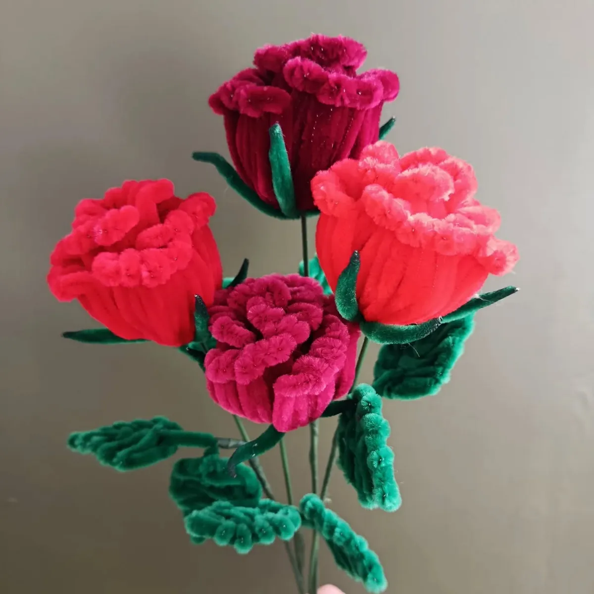

Une idée pour chaque occasion
Saint-Valentin
Une rose rouge qui ne fanera jamais : pour la Saint-Valentin, une fleur éternelle façonnée à la main, avec une carte de vœux pour glisser une déclaration.
La rose rouge, symbole de l’amour
Dans le langage des fleurs, la rose rouge dit l’amour et la passion. En fil chenille, elle garde son éclat jour après jour : une jolie façon de dire que vos sentiments, eux non plus, ne faneront pas.
Une rose rouge à l’unité coûte 8 €. Pour un geste plus généreux, découvrez les roses rouges en bouquet ou le bouquet Rubis.
Des mots doux pour la carte
- Pour toi, pour toujours.
- Mon amour pour toi ne fanera jamais.
- Une rose pour chaque raison de t’aimer.
À commander à l’avance
Chaque fleur est faite à la main : pensez à passer commande quelques jours avant le 14 février. Retrait gratuit à l’atelier de Signy-l’Abbaye ou livraison autour de l’atelier.
Mes idées de créations


Les autres occasions
Les fleurs de l’atelier
- Rose en fil chenille
- Tulipe en fil chenille
- Lys en fil chenille
- Gerbera en fil chenille
- Pavot et coquelicot en fil chenille
- Arum en fil chenille
- Hortensia en fil chenille
- Tournesol en fil chenille
- Muguet en fil chenille
- Lavande en fil chenille
- Jonquille en fil chenille
- Marguerite en fil chenille
- Pensée en fil chenille